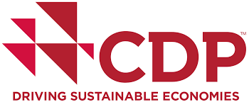
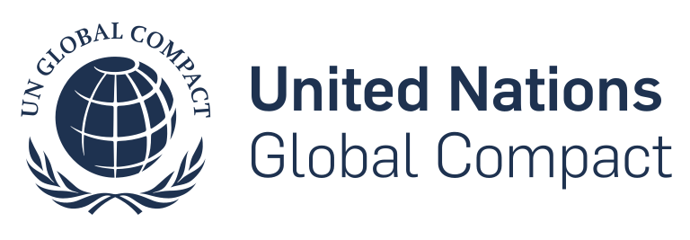
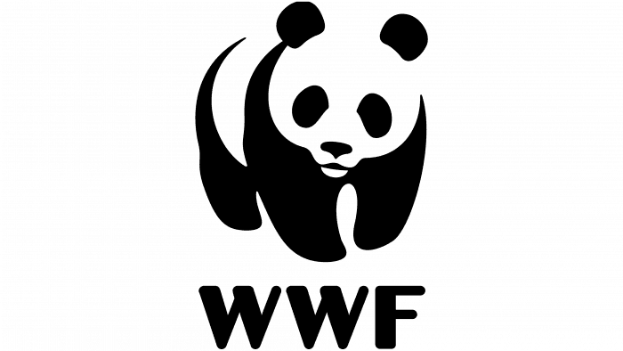
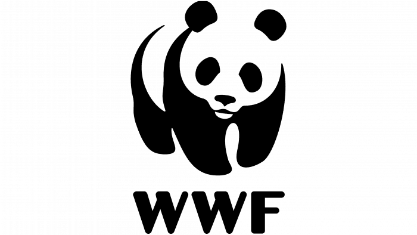

導入SBTi以實現策略性氣候行動
關於SBTi
科學基礎目標倡議（SBTi）是一個全球性組織，專注於推動企業和金融機構採取氣候行動。SBTi通過開發標準、工具和指導方針，幫助企業設定符合氣候科學的溫室氣體（GHG）減排目標，確保全球升溫控制在安全範圍內，並在2050年之前實現淨零排放。
SBTi是一項旨在幫助企業設定和實現與氣候科學一致的減碳目標的倡議。這些目標基於最新的氣候科學研究，確保企業的減碳努力能夠支持全球將升溫控制在 1.5°C 或 2°C 以內的目標。SBTi提供了一個清晰的標準和指南，幫助企業在設定目標的過程中保持科學性和可行性。
SBTi的合作夥伴
SBTi作為公益機構，並設有一家子公司專門提供目標驗證服務。SBTi的合作夥伴包括碳揭露專案（CDP）、聯合國全球契約（UNGC）、We Mean Business聯盟、世界資源研究所（WRI）和世界自然基金會（WWF）。


 

設定SBTi科學基礎目標的優勢：

設定科學基礎目標不僅能幫助企業減少其環境衝擊，還能帶來多重商業利益。這些目標顯著增強企業的市場競爭力，因為越來越多的投資者和消費者期望企業能夠採取負責任的環境行動。企業通過設定與氣候科學一致的目標，能有效減少與氣候變遷相關的風險，從而確保其業務的長期可持續性。同時，科學基礎目標也有助於提升企業的品牌信譽，讓企業在日益注重環保的市場中脫穎而出。
SBTi為企業提供了一個強有力的淨零框架，協助各行各業的企業設定具有科學雄心的減排目標，並指引出有效的減量路徑圖。這不僅使企業能夠達成短中期的減碳目標，還確保其長期的永續發展與達成淨零目標，並向其利害關係人展示企業在氣候行動中的承諾和成果，進一步鞏固其市場地位。